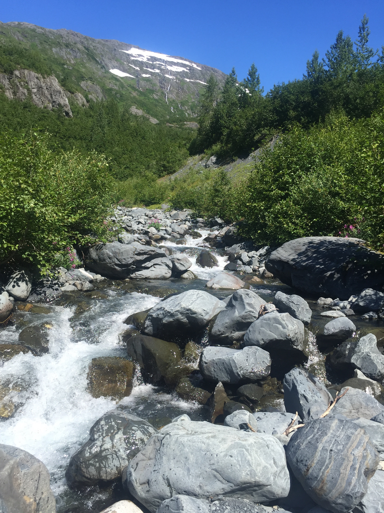
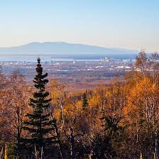
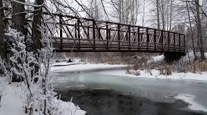
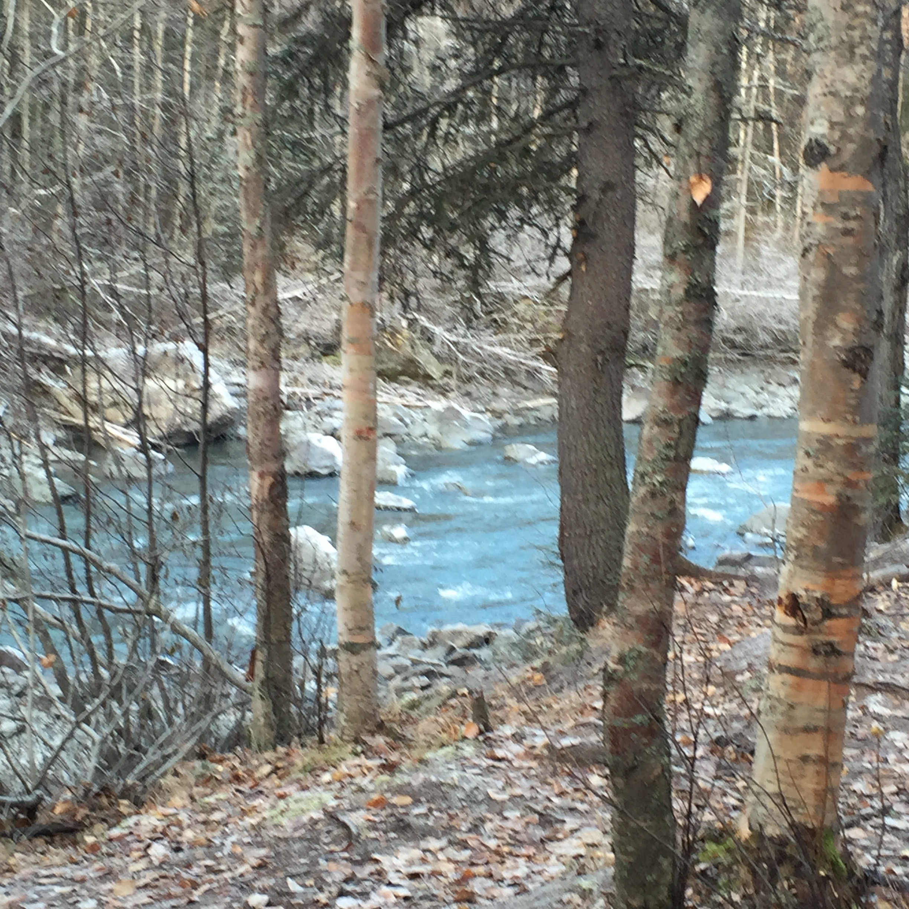

| Powerline | endless hiking depend on the trails you take | easy / moderate |  | There are many places along the mountains to access the Powerline. Beautiful views of Anchorge, McKinley and the Chugach Range. |
| Prospect Heights | endless hiking depending on the trails you take | easy to moderate |  | The possibilities are endless here as you can hike all over the mountains. |
| Far North Bicentenial | 20+ miles depending on the trails you choose | easy |  | This is a great place in town for hiking, biking and skiing in the winter. Warnming Parts are closed during active bear times. |
| Eagle River Nature Center | 1 - 23 (Crow Pass to Girdwood) | easy to challenging |  | Visit the Nature Center and walk the grounds. Easy trails with great views of glaciers and rivers. If you want the long journey - take the Crow Creek Pass Trail. |